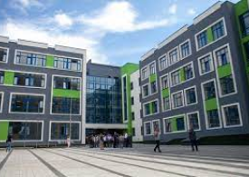

Напрямки
Дайвінг
Світовий рекорд глибокого занурення становив 1044 футів південноафриканським водолазом Нуну Гомешом у 2005 році. Занурення тривало 12 годин і 20 хвилин, з яких на спуск були використані тільки 14 хвилин. Гомесу також належить рекорд щодо занурення у найглибшу печеру – на 927 футів. Найглибша западана в Тихому океані – Маріанська, довжиною в сім миль підкорилась у 1960 році Пікару та Дону Уолшам, які за допомогою міні-субмарини досягнули її глибини.
СпробуватиВодні лижі
Воднолижний спорт на території України розвивається приблизно 50 років. Про його історію та сучасність будемо говорити з Олександром Михайловичем Ковтуном, віце-президентом Федерації воднолижного спорту та вейкбордингу України, Заслуженим тренером України, одним з перших Майстрів спорту України, членом збірної команди СРСР, та Микитою Олександровичем Ковтуном – багаторазовим чемпіоном України з воднолижного спорту, Майстром спорту міжнародного класу, першим чемпіоном України з вейкбордингу (2003-й рік).
СпробуватиSUP-серфінг
SUP-борди бувають двох видів: надувні та цілісні. Відмінні характеристики цих видів полягають у їхній функціональності. Для досвідченіших райдерів найкраще вибирати дошку з найкращими характеристиками – цільну дошку. Любителі екстремальних видів спорту можуть використовувати SUP-борд для спусків по гірських річках або під час підкорення морських та океанських хвиль. Для новачків чудово підійдуть легші надувні SUP-борди. Вони також досить просто складаються і їх можна транспортувати навіть у звичайному рюкзаку.
СпробуватиВикладачі
Сергій
Олексій
Дмитро
Про нас
Спеціально обладнане приміщення, у тому числі інвентарем, та призначене для проведення тренувань, спортивних ігор, занять спортом або фізичною культурою.
Наші школи

Адреса
місто Київ
вул. Ситна 34
місто Львів
вул. Пармізан 60
місто Харків
вул. Вигадницька 48